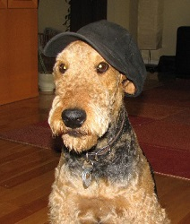

Nom: Gaston Piston
Race: Chien Terrier airedale

Personnalité
- Enjoué
- Le plus hyperactif de toute la portée de treize chiots
- Déteste les bains et préfére de loin être sale
- Très matinal les matins de fin de semaine seulement
Réalisation
- Creusage d'un trou dans le mur du salon pour y cacher un os
- Escalade du mont Tremblant dans un mètre de neige
- Fracture de la patte du chat de la voisine
Activités préférées
- Chasse à la moufette et malgré cinq arrosages, ne se décourage pas
- Destruction de la haie de cèdres de mon maître
- Dégustation de fromage
- Forage de la cour arrière
- Vidage de mes jouets en peluche
- Roulades dans les chardons et les carcasses d'animaux